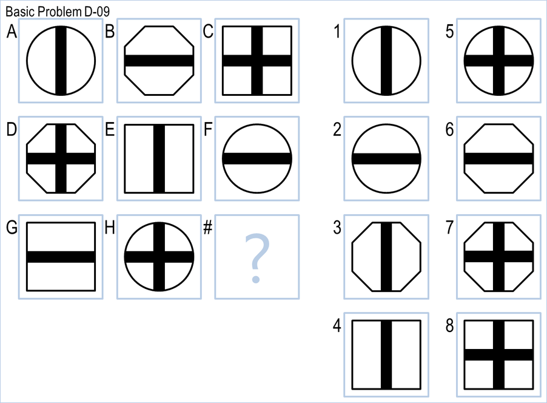

Experiment · September 2026
Can a computer pass an IQ test?


Python, Claude Code, 16 language models
- 13random guessing
- 34a student's 2017 program
- 59expert system, no language model
- 93current language model
Three programs, one from 2017 and two from this year, take the same 96 Raven's Progressive Matrices, the wordless reasoning test from 1936 that still shows up in hiring. A current language model, given the puzzle sheet and every cell as images, nearly aces it.
Read the write-up and browse the code on GitHub Prompt history
How I built it
Sixteen language models from nine companies ran the same puzzles with the same prompt, so the write-up compares accuracy, cost, and speed directly. Four models tied at 92 while their prices differed by almost five to one. Five scored below the program with no AI in it. One release changed how the model works at answer time, and that moved its score more than two years of scaling did on either side. A neural network trained on thousands of invented puzzles scored 10, worse than guessing, and the explanation is the most useful lesson in the repo. A script generates every number from the raw results, and the prompt history quotes every instruction that produced them.